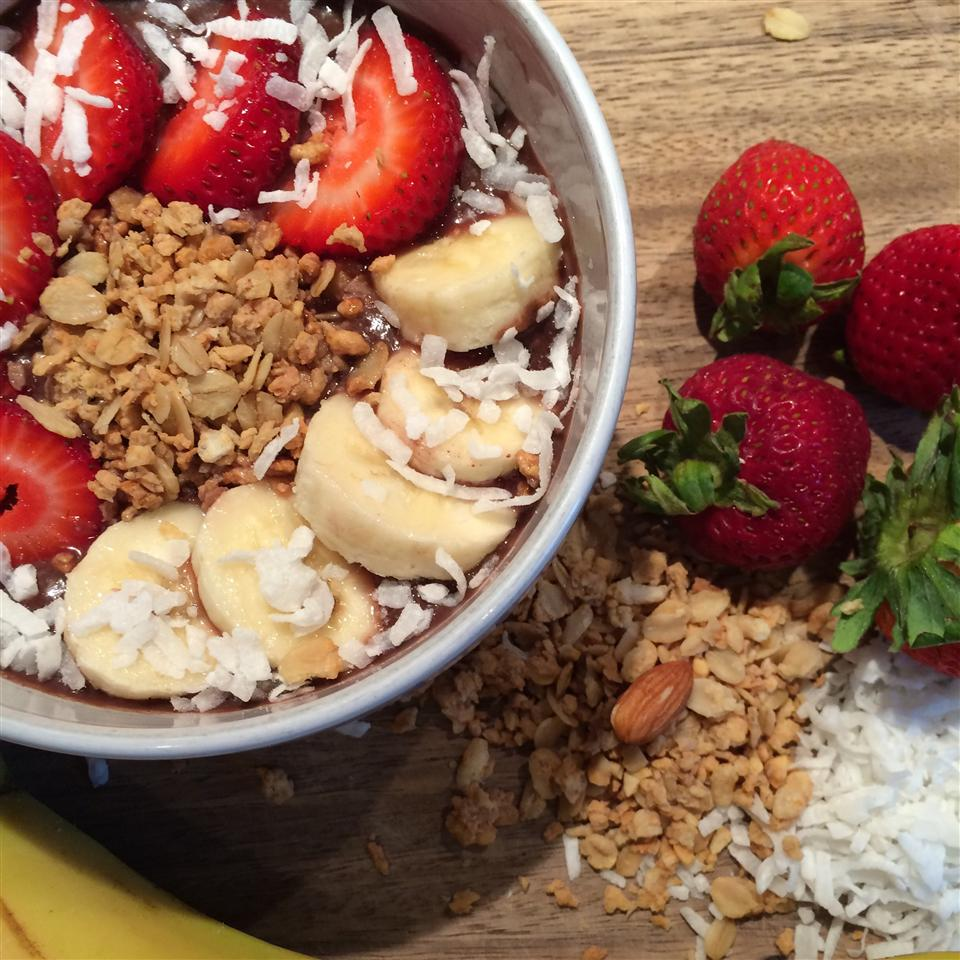

Acai Bowl

Description
Encountered this in Hawaii. It was very good and dairy-free.
Ingredients
- 1 cup acai berry sorbet
- 2 tablespoons granola, or as desired
- 4 strawberries, sliced
- 1 banana
- 2 teaspoons unsweetened coconut flakes, or as desired
- 1 teaspoon honey, or as desired
Steps
- Place acai sorbet in a bowl and top with a layer of granola. Line strawberries and bananas on granola layer and top with coconut and a drizzle of honey.